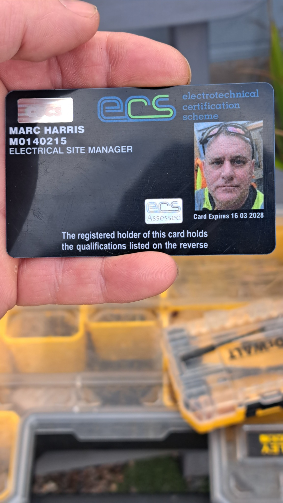

18th Edition Wiring Regulations
Current wiring regulations qualification
No scan uploaded yet
Scan to addA structured library covering electrical engineering, site management, automation, security systems, renewable energy, communications, digital skills and business development.
The ECS Electrical Site Manager card is now featured prominently, with current high-value credentials displayed alongside it.

Electrical Site Manager · Project Delivery · Utilities · Infrastructure · MEICA
Filter by discipline. Open supporting evidence directly from each card.
Current wiring regulations qualification
No scan uploaded yet
Scan to addInspection, testing, certification and verification
Certificate scan to add
Scan to addElectrotechnical Technology – Installation (Buildings and Structures)
Qualification conferred in 2011
View evidenceElectrotechnical Technology
Certificate scan to add
Scan to addInstallation and maintenance of small-scale solar photovoltaic systems
Qualification conferred in 2011
View evidenceTwo-day Fire Alarm and Emergency Lighting course
Completed January 2010
View evidenceSite Management Safety Training Scheme
Valid to 30 April 2028
View evidenceSite Supervision Safety Training Scheme
Certificate shown; expiry 30 April 2026
View evidenceElectrotechnical Certification Scheme
Valid to 16 March 2028
View evidencePLC / digital control course
Completed 1992–93
View evidenceAdvanced access control product training
Completed October 2010
View evidenceSpecialist security smoke system training
Completed February 2005
View evidenceWray Castle College of Marine Electronics
Awarded July 1992
View evidenceDesigning and Creating Multi-Page Websites – Distinction
Awarded August 2008
View evidenceDesigning and Creating Advanced Websites
Awarded February 2010
View evidencePersonal development learning programme
Awarded May 1991
View evidenceBusiness skills and effective management
Awarded March 1991
View evidenceWest Cheshire College
Completed September 2006
View evidenceThe full candidate-history PDF is available below, with the main conferred achievements summarised for quick review.
Move directly between Marc’s CV, qualifications and M-Hub profile without leaving the Juswrk platform.